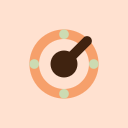

L'icona attuale è un lucchetto a contorno con un circuito dentro, su un fondo lilla sfumato: a 40px il circuito diventa poltiglia e il tratto sottile sparisce. Queste quattro partono dal contrario — una forma piena, due colori, leggibile a 16px — nella palette nuova (fondi neutri, pastelli vivi). Per ognuna: master 1024, la scala reale fino a 16px, la maschera circolare Android, il monocromatico per la status bar e la variante estensione.
La forma più veloce da riconoscere: il lucchetto che l'app già usa, ma pieno, con l'archetto spesso e il buco della chiave in negativo. Nessun dettaglio che si perda sotto i 30px. È l'evoluzione conservativa del marchio attuale.
Una chiave che è anche la K di KeyVault: testa tonda, gambo diagonale, due denti in salvia. Su fondo scuro neutral-900 l'icona si stacca da tutte le altre in home, e il pastello resta pastello perché è il tratto, non il fondo.
Se il messaggio è "protezione" invece di "serratura": scudo salvia su fondo chiarissimo, buco della chiave scuro al centro. È la direzione più generica delle quattro — la metto perché è quella che i password manager si aspettano, e serve saperla scartare consapevolmente.
La ruota di una cassaforte: anello pesca, mozzo scuro, lancetta e quattro tacche salvia. È la più "organic" delle quattro — tutta di cerchi — e l'unica che funziona anche ruotata come indicatore di stato (sync, unlock) dentro l'app.
Con 3a in esempio. Le maschere “adaptive” qui sopra sono quelle vere: il cerchio Android ritaglia 66 unità su 108 di layer, quindi ogni marchio è rimpicciolito al 75% intorno al centro per starci dentro — è la geometria che adaptive_icon_foreground e adaptive_icon_monochrome in pubspec.yaml si aspettano.
Il manifest ha già quattro dimensioni (16/32/48/128) e nessuna variante di stato: la toolbar mostra la stessa icona con app bloccata, host assente o due credenziali pronte. Qui lo stato è un pallino d'angolo — grigio bloccata, pesca host mancante, salvia con il numero di match.

monochrome
ext 128 32 16Fondo pesca accent-200 a pieno campo (le maschere le mette il sistema), inchiostro al 75% dentro la safe zone, sfondo adattivo trasparente e monocromatico bianco su alfa come la variante attuale. In pubspec.yaml cambia solo adaptive_icon_background: da #FFFFFF a #FFE1D0.
Prossimo: "vai con 3a, dammi i PNG" · "prova 3b con il fondo chiaro" · "unisci il buco chiave di 3a con i cerchi di 3d"